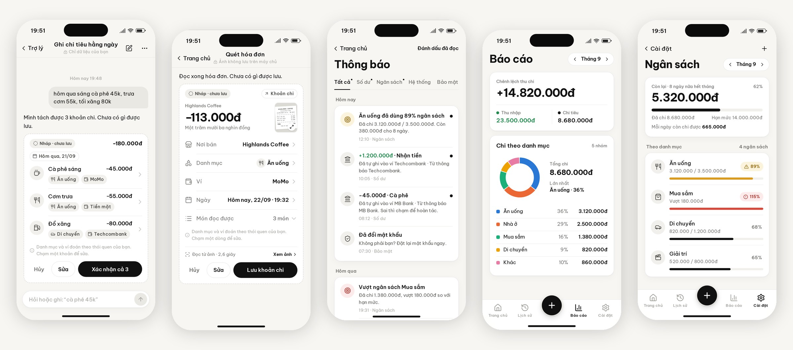

TrackerX
Ứng dụng quản lý chi tiêu cá nhân · Nhóm Ngọng LN · Buổi sáng thứ 4
Tài liệu API
Swagger · 96 endpoint
Chức năng app (PDF)
Mở xem trên trình duyệt
Chức năng app (TXT)
Bản văn bản thuần
Mã nguồn
GitHub repository
